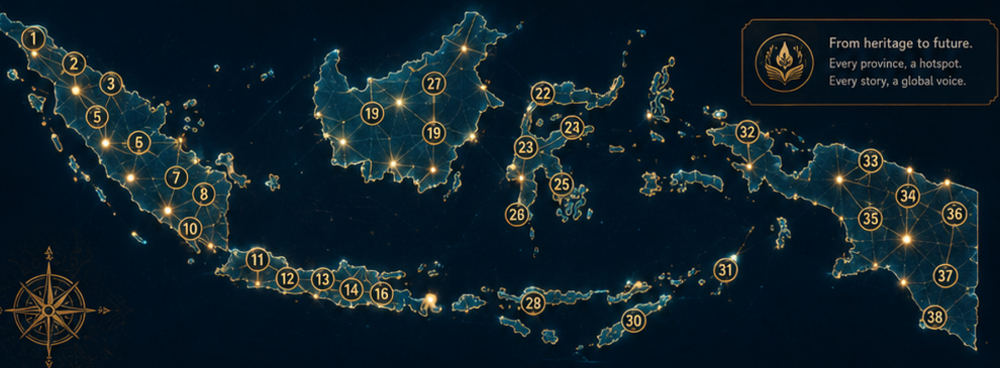

AKSANTARA
From Aksara to AI
AKSANTARA is an executive edu-cultural app transforming Aksara Nusantara, provincial wisdom, oral traditions, and integrated English skills into one interactive learning journey. Every province becomes a living hotspot: script, voice, story, vocabulary, reading, speaking, writing, intercultural reflection, QR discovery, and ethical AI support.
Six Living Zones
Choose a province, then the selected Aksara, wisdom, voice, tasks, QR, and admin record update across the whole system.
Heritage Roots
Aksara, manuscripts, stories, voices, and provincial wisdom form the learning foundation.
Future Horizons
AI, QR, audio, visual exploration, and integrated-skill tasks help learners communicate globally without losing cultural identity.
Province Hotspots
Select any province. The whole app updates automatically: Aksara Studio, Skills, Voice Atlas, AI Tutor, QR Station, and Admin statistics.

Aksara Studio
Every province introduces a local script tradition, manuscript spirit, local wisdom, and English-learning transformation.
Heritage-to-English Mission
Skills Lab
Listening, speaking, reading, writing, vocabulary, and intercultural reflection are integrated with the selected province and its Aksara heritage.
Selected Province
Voice Atlas
Practice intelligible English while respecting local identity. The focus is clarity, confidence, rhythm, and intercultural meaning.
Pronunciation Focus
“Our local script and wisdom can speak to the world through English.”
AI Tutor
No API key is required. This offline tutor gives guided prompts based on the selected province, Aksara seed, and integrated-skill mission.
Aksantara AI
Suggested Prompts
QR Discovery
Generate a province QR card for exhibition stations, classroom use, or digital dossier access. Choose any province and the QR card updates with its Aksara, local wisdom, voice focus, and learning mission.
AKSANTARA
QR Details
Dossier
Compact professional dossier. Click any board to open the full visual in one screen.


Admin
Admin Lock / Unlock
Locked.
Content Designer
Create, update, or hide province content locally. Changes are saved in this browser and can be exported as JSON.